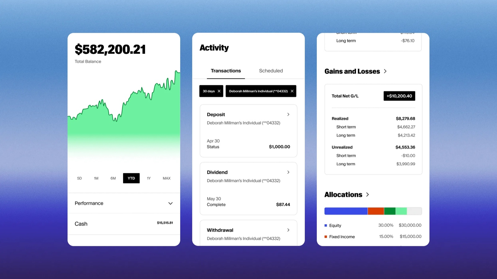

We hand-pick the CPAs, estate attorneys, and specialists we'd send our own families to, then quarterback the work between them so your plan moves cleanly across every desk it needs to touch.
Where your money is held
A custodian is the independent institution that actually holds your money — safeguarding your accounts, settling trades, and handling the movement of funds. Winnacle never takes custody of your assets. We direct the strategy; the custodian holds the assets. That separation is a core protection for you.
We custody client accounts with Altruist, a modern, independent custodian built for fiduciary advisors and the families they serve.

A representative sample, not a complete list, and never a requirement. If you already have a CPA, attorney, or other professional you trust, we'll work alongside them. When you do need an introduction, these are the firms we'd send our own families to.
Tax preparation & accounting · Waco. (254) 772-5690
Wills, trusts, healthcare directives.
Divorce, QDROs · JustHer® referrals.
Business structure, succession.
Estate settlement, probate.
Home, auto, umbrella · independent broker.
Term life, disability, key person.
LTC · hybrid solutions.
Medicare supplement & advantage.
Retire Ready class venue · every semester.
Alumni connection · community workshops.
Stewardship workshops & planning seminars.
Charitable giving · donor-advised funds.
When the plan calls for a specialist, we surface a name (sometimes two) and explain why that firm fits your situation.
If you want us to send the partner the relevant slice of your plan ahead of the meeting, we will. If not, no problem.
When the partner finishes, we update the plan to reflect it. The trust, the policy, the return. All reflected in one place.
15 minutes. Bring up any partners you already have, we coordinate with them.